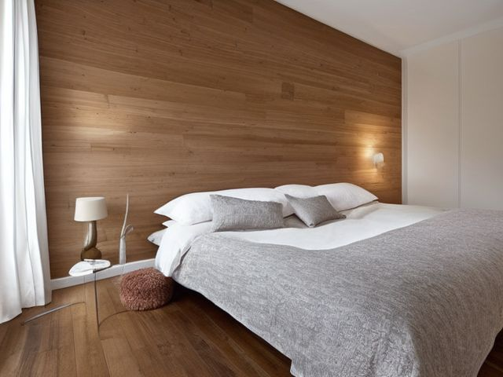

Primary Bedroom micro zone
The Bed and Bedding Zone
The bed and the linens on it have one job, which is to get you through the night without waking up.
One session: 30-45 min. most of it in Sort, once you pull everything out from under the bed

What done looks like
Bed made the same way every morning: fitted sheet, flat sheet or duvet, two sleeping pillows per person, one throw folded at the foot. Two complete sheet sets for this bed, one on it and one folded on the linen shelf. Under the bed holds either nothing or two labelled flat bins, and you can walk from either side of the bed to the door without stepping over anything.
Check these before you start
- FallStorage bins, shoes and a charging cable in the strip of floor between the bed and the door are what your foot finds at three in the morning on the way to the bathroom. Keep that strip bare.
- Fall, cut, or crushFramed pictures, a speaker or a stack of books on a headboard ledge or hung on the wall above the pillows sit directly over a sleeping head. Move them, or fix them into the wall properly.
The six passes, in order
Work them in this order. Sorting after you have arranged things means arranging things you were about to remove.
Sort
Decide what stays. Everything else leaves the zone now.
Strip the bed and pull out everything underneath it. Sheets worn thin at the hip, blankets gone pilled and scratchy, and pillows that stay folded in half when you bend them are finished; they leave as rags or textile recycling, not as spares for a guest who never comes.
Straighten
Give what stays a home, placed where the hand actually reaches.
Store each sheet set folded inside one of its own pillowcases so the flat sheet and the fitted sheet stop travelling separately, and keep this bed's linen on one shelf instead of stacked in with guest doubles and kid singles.
Shine
Clean it, and use the cleaning to inspect what you cannot see when it is full.
With the mattress bare, vacuum the whole surface and the seam where the protector tucks under, then run the vacuum head down behind the headboard where dust and hair pack against the wall.
Safety
Make the zone safe for everybody who uses it, including the shortest person.
Nothing goes under the bed that sticks out into the strip of floor you cross in the dark, and nothing heavy sits on a headboard shelf directly above where your head rests.
Standardize
Write down the best way you know today, so it survives you forgetting.
Write down what a made bed means in this house, down to how many pillows go on and whether the duvet is folded back or pulled flat, so it looks the same on the mornings you do it and the mornings someone else does. A standard is the best way you know today, written down.
Sustain
Attach the reset to something that already happens, so it keeps itself.
Make the bed before you leave the room, while the duvet is still thrown back and it takes one pull. Come back at ten and you are moving yesterday's clothes off it first.
The third sheet set
You are holding four or five sets because one was a wedding gift, one is new but scratchy, and one is the good set you have never slept on. Two per bed is the honest number: one on, one clean. Keep a third only if a child or a pet actually sleeps here and you have stripped this bed at two in the morning within the last year. Anything past three is a set you wash, fold, and never put on a bed. And the good one goes on tonight, because a sheet saved for an occasion is a sheet nobody ever uses.
Cleaning it properly
Strip it right back and clean what the sheets hide, working top down from the headboard to the bare mattress to the floor beneath. The surface most people skip is the strip of floor and wall behind the headboard, where dust and hair pack in unseen.
Inspect as you clean. Cleaning is the only time you see the zone empty, so use it.
- A yellowed patch or a dip formed on one side of the mattress, telling you the surface is wearing unevenly.
- Dark speckling or a musty note in the mattress seam, the first sign of a pest or trapped damp.
- A cool, damp feel or a mildew smell on the wall behind the headboard, which can mean moisture is coming through from outside.
- A bolt or joint on the frame worked loose enough to let a rail flex when you press on it.
The standard that keeps it fixed
Two sheet sets for this bed, each folded inside its own pillowcase; a made bed means the agreed pillow count and nothing else on the cover.
Reset trigger. When you strip the bed to wash the sheets, look underneath it before the clean set goes on.
Next in this room
- Your Own Nightstand, the zone after this one
- All 6 micro zones in the Primary Bedroom
Related reading
- What is 6S?
- This zone's safety pass, in full
- Is one spot in this zone always the one you skip?
- Why this zone gets messy again
- Decluttering vs. organizing
- Before you buy storage for this zone
- Still does not fit, even after the honest count?
- Does something in this zone actually get used somewhere else?
- Stuck on one item in this zone?
- Written the standard, but nobody else follows it?
- Does everyone in the house agree what "done" looks like here?
- Does more than one person use this zone?
- Found a duplicate of something in this zone?
- Why the standard above names one home per category
- Is the everyday item in this zone actually the easy one to reach?
- Not sure whether to keep something in this zone?
- Does this zone keep running out of something?
- Started this zone and stalled partway through?
When you want it off the screen
Carry The Bed and Bedding Zone into the room
The method above is complete and free. The Whole House Print Pack puts The Bed and Bedding Zone and the other 113 micro zones on 684 printable cards, so the steps you just read are not stuck behind a phone screen while your hands are full.
The Print Pack, 19 dollarsJust this zone, 4 dollarsOr draw a card free
The Bed and Bedding Zone on its own is 4 dollars for 6 cards. All 114 micro zones is 19 dollars for 684. The whole house is the better buy; the single zone is here so you can take only what you are working on.
If The Bed and Bedding Zone keeps fighting back, the real problem usually sits somewhere else in the room. A one hour virtual consult is 250 dollars: we find the function, the friction and the root cause together, and you keep a written standard for the space. See what a consult covers.